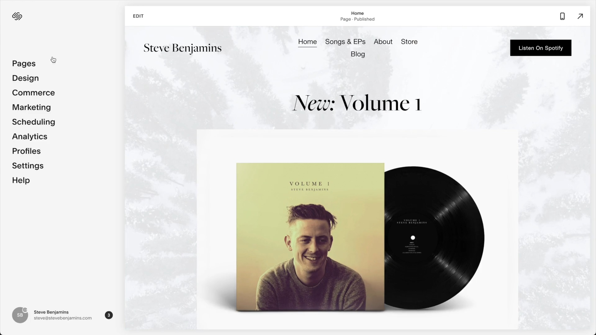
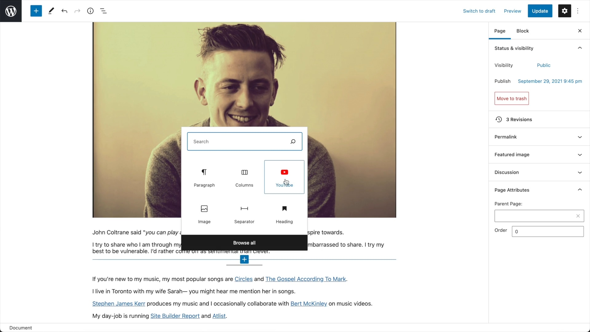
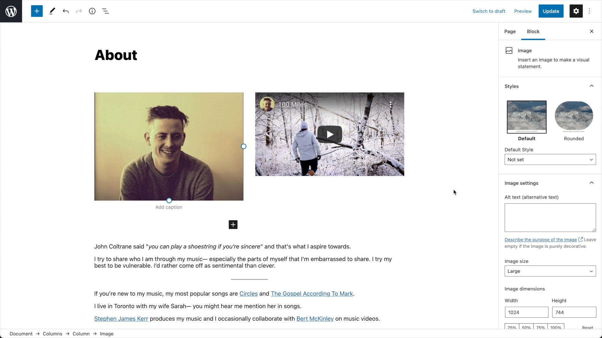
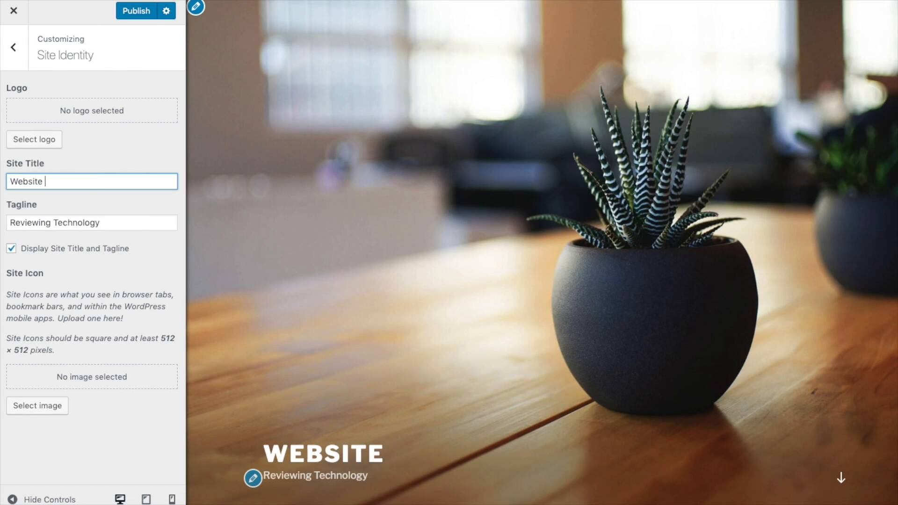

WordPress and Squarespace are both tools you can use to build a website. They are well known and power millions of websites each.
But both tools have major differences that may or may not work for you depending on what you’re looking for.
That’s why it’s wise to start with a little research— this article will explain the major differences.
A Quick Summary Of The Key Differences
1. Ease Of Use — Squarespace is easier to use than WordPress. Read More
2. The Editor — Both Squarespace and WordPress have drag-and-drop editor but Squarespace’s editor shows your complete website— while WordPress does not. Read More
3. Setup — Setting up a Squarespace website is easier and faster but WordPress offers more hosting options. Read More
4. Flexibility — WordPress is definitely more flexible than Squarespace. Read More
5. Plugins — WordPress’s biggest strength is the huge amount of plugins available. Read More
6. Templates — Squarespace is known for beautiful themes. WordPress has a massive marketplace for themes. Read More
7. Template Customization — Squarespace has better tools for customizing your template without editing code. Read More
8. Frustration Factor — It’s possible that at some point both Squarespace and WordPress may frustrate you— but they’ll frustrate for different reasons. Read More
9. Ecommerce — Both Squarespace and WordPress cover the basics of ecommerce but WordPress allows for much more customization. Read More
10. Pricing — You are going to have to pay for both Squarespace and WordPress— but you’ll pay in vastly different ways. Read More
11. SEO — Squarespace and WordPress both cover the basics of SEO but if you really want to get serious, you’ll want to use WordPress. Read More
Ease of Use
Squarespace is the clear winner on ease of use.
Squarespace is user-friendly and intuitive. It’s much easier to use than WordPress. You won’t ever need to touch code with Squarespace.
WordPress on the other hand has a steeper learning curve. First time users may find it difficult to navigate WordPress’s confusing menu system. You’ll also likely need to tweak HTML or CSS code at some point with WordPress.

Squarespace is the clear winner on ease of use.
The Editor
Squarespace has a better drag & drop page editor.
Editing pages with Squarespace is easier than it is with WordPress.
With Squarespace you add Content Blocks (text, images, forms, videos) that can be moved up and down the page and into columns:
Using the Squarespace editor.
WordPress’s page editor is called Gutenberg. It allows you to add Blocks (text, images, forms, videos) and move them up and down a page or into columns:
Using the WordPress page editor.
The biggest frustration with WordPress’s page editor is that you’re not able to see your page in the context of your full website— instead we need to hit Preview to see how our page will look:
My biggest frustration with the WordPress editor is not being able to see a live preview as I create.
This means you’ll often find yourself flipping between the editor and the preview to see how things are looking.
Note: You can install a WordPress plugin called Elementor that makes WordPress’s page editor more like Squarespace. It sort of gets there but it’s also just not the same ease of use.
Setup
Setting up a Squarespace website is easier and faster but WordPress offers more hosting options.
Squarespace has made it really quick and easy to setup a website. Even a beginner could setup a website on a domain name within 15 minutes.
It will take beginners much more time to set up a WordPress website.
A big reason for this is that you need to find a WordPress host— such as Kinsta or Bluehost. So you’ll need to choose a web host first. Squarespace includes hosting— so you just never have to think about it.
If being able to choose or switch your web host is important to you, you’ll want to use WordPress.
It's easier to setup a Squarespace website... but WordPress offers more configuration options.
Flexibility
WordPress definitely wins on flexibility.
We’ve mostly looked at how WordPress has a steeper learning curve than Squarespace.
So you might be wondering: why doesn’t WordPress just make things easier?
Well, there’s actually a good reason! WordPress has a steeper learning curve because it is flexible.
This is a common trade-off in software. Simple software is easy to use. Powerful software usually has a steeper learning curve.
In short, WordPress just has a lot more optionality:
- WordPress is open source. Which means you can open up the codebase and do whatever you want with WordPress. Plus there are thousands of developers familiar with coding on WordPress.
- Configure your server however you want. Want to work with a specific CDN? With WordPress you can do that— not with Squarespace.
- Build your own blocks. Want to create your own custom blocks within the page editor? You can do that with WordPress— not with Squarespace.
- Customize your theme however you want— if you’re comfortable with code. As long as you’re comfortable in code, you can customize your theme with WordPress however you want— not so with Squarespace.
WordPress is definitely more flexible than Squarespace.
Plugins
WordPress’s biggest strength is the huge amount of plugins available.
WordPress has over 11,000 plugins that add new functionality to your website. Some plugins are free, some are paid.
Here are some example plugins:
- Elementor: Editing pages like a drag and drop, visual page builder.
- Buddypress: Turn your WordPress website into a mini-social network.
- Yoast SEO: Adds XML sitemaps, canonical URLs, meta title and description templating and more.
- Advanced Custom Fields: Let’s you create your own CMS with custom fields.
- Tablepress: Create tables in a spreadsheet-like interface with formulas.
Squarespace has no equivalent to these plugins. They do have a small selection of Extensions but they are mostly for ecommerce.
Templates
Squarespace is known for beautiful themes. WordPress has a massive marketplace for themes.
One reasonI’ve chosen Squarespace for several personal websites is that everything just looks good without much effort on my part.

I use Squarespace for personal websites— like my music website.
Squarespace is most known for their beautiful templates— all of which are included in every Squarespace plan:

Example template.
Another example template.
WordPress comes with 1 theme: Twenty Twenty-One. There are two options if you want more themes:
- Buy A Theme: You’ll want to browse a theme marketplace like Theme Forest (which has 11,000 themes for sale).
- Find A Free Theme: There are about 4,000 free themes available on WordPress.org. Or you can find a free theme on WordPress.org— there are about 4,000 available. Though I found a lot of the “free” themes are missing featuers and you need to upgrade to Pro to get them.
There is a huge selection of WordPress themes— some, like Astra, are excellent.
Template Customization
Squarespace makes it very easy to customize your theme.
It’s really easy to customize Squarespace templates. For example, to change your website colors you just edit this Color Palette:
Choosing a color palette.
This color palette automatically applies across your entire website.
So what happens if you don’t like how the color is applied? While Squarespace lets make you those specific changes too— if you want to:
Don't like how a color was applied? Squarespace also let's choose specifically how colors are applied.
The WordPress style editor is called Customizer and I’ve found it can be inconsistent from theme to theme— some themes come with no meaningful style options. It’s a bit hit or miss.
Editing themes using the Customerizer tool.
But here’s the upside for WordPress: if you have specific look that you’re after you can almost certainly find a WordPress theme for it. And if you can’t you can always hire a developer to create custom theme— which you can’t do with Squarespace.
Frustration Factor
It’s possible that at some point both Squarespace and WordPress may frustrate you— but they’ll frustrate for different reasons.
So how might WordPress or Squarespace frustrate you? What might just drive you nuts?
Well, WordPress will frustrate you when things just don’t work.
Because the WordPress ecosystem is so huge, it can be tricky to connect it all together— or even to find what you’re looking for. Here are some examples:
- Overwhelm — Need a photo gallery? There are over 850 on WordPress’s plugin store. How is anyone supposed to sort through all that?
- Plugin Incompatibilities — It’s common to find incompatibilities between themes, plugins and certain versions of WordPress— and getting the fix can require you to tweak code. All you have to do is browse plugin reviews to see people getting frustrated by this.
- Staying On Top Of Security — It’s important that you upgrade your WordPress website to keep on top of security. But it can be frustrating when upgrading WordPress breaks existing themes or plugins— gah!
Squarespace does not have these frustrations. Need a photo gallery? Squarespace has built a really great photo gallery for 95% of users needs. And you never have to worry about upgrading Squarespace or incompatabilities— everything just works and Squaresapce takes care of that in the background.
So what will drive you nuts about Squarespace?
You may hit up against Squarespace’s limits and find them arbitrary— especially if you try to do something unconventional!
For example, what if I want a block to display on desktop but not mobile on Squarespace— well it can’t be done (unless you’re willing to jump into CSS code).
An overview of the ways in which Squarespace and WordPress might just FRUSTRATE you.
Ecommerce
Both Squarespace and WordPress cover the basics of ecommerce but WordPress allows for much more customization.
WooCommerce is WordPress’s official ecommerce plugin. So if you’re building an online store with WordPress you’ll want to use WooCommerce.
Customizing WooCommerce (especially templates) can be a real pain.
If you are looking for an easy setup and customization, you’ll want to use Squarespace.
Plus everything integreates with Squarespace— I love being able to see how email marketing and my store all in analytics.
Note: You’ll want to use. Squarespace’s commerce plans to avoid paying transaction fees.
By ecommerce I mean ship and sell products. If you’re interested in selling memberships or appointments I’d suggest Squarespace.
Pricing
You are going to have to pay for both Squarespace and WordPress— but you’ll pay in vastly different ways.
In the end, whether WordPress or Squarespace is more expensive will really depend on the the individual configuration of a website.
Squarespace Pricing
Squarespace offers four all-inclusive plans which range from $12 - $40 per month.
Each plan includes hosting, templates and domain registration (when purchased annually). The more expensive plans also include ecommerce.
Squarespace pricing plans.
WordPress Pricing
WordPress is free to use but you have to host it somewhere— and a decent host will cost around the same as a Squarespace website plan.
There are free WordPress themes available but the best themes are for sale. You can expect to pay around $39 - $120 for a premium WordPress theme— but you get the rights to that theme for life.
There are also many free WordPress plugins, but the best plugins are often for sale. For example WooCommerce (an ecommerce WordPress plugin) sells extensions for up to $299. Other WordPress plugins are billed on a recurring basis like WPForms, which costs $40 per year.
SEO
Squarespace and WordPress both cover the basics of SEO but if you really want to get serious, you’ll want to use WordPress.
The basics of small business SEO are both covered by Squarespace and WordPress but WordPress wins once you get into more advanced SEO needs.
For example, if you want to add rich data markup for reviews— WordPress is much better set up for that. Technically you could do it but it’s a huge pain in the ass.
Site Speed is important and Squarespace typically get’s around 40-50 for me. WordPress runs the gamut— because you configure WordPress you can find WordPress websites that score a 99 or websites that score a 10.
Blogging
Squarespace has excellent blogging— the best among website builders. There’s a long list of features:
- Markdown support
- Podcast support
- RSS feeds
- Google Amp
- Multiple contributors
- … And more
Of course, WordPress covers all these features— and much more.
In the end, Squarespace is good if you’re looking an easy to setup, all-in-one solution. WordPress is better if you’d like to get serious with blogging and be able to customize everything.
Support
Squarespace customer support will be able to provide more answers.
Squarespace provides 24/7 email support and a live chat service during EST working hours.
Because WordPress is an open source platform, it doesn’t come with any customer support— though some paid themes and plugins include some customer support from the creator. Also, some specialized web hosts will help you install and set up a WordPress site.
It’s hard for WordPress support to provide answers because WordPress is so configurable it’s hard to track where it went wrong.
Customer support is always a polarizing topic because all the evidence is typically anecdotal. I’ve actually had great experiences with both Squarespace and WordPress hosts.
Final Verdict: Should You Use WordPress Or Squarespace?
When choosing between Squarespace and WordPress I have a simple rule.
I choose:
- Squarespace for conventional websites
- WordPress for unconventional websites
…. This begs the question:
When Is a Website Conventional?
Here are some examples of conventional websites:
- Portfolios
- Blogs
- Small business websites
- Restaurant websites
- etc.
These websites are conventional because they only need conventional features— like photo galleries, forms and maps— all of which Squarespace does an excellent job of supporting.
Why I Don’t Recommend WordPress For Conventional Websites
Let’s say you want to add a photo gallery to your WordPress site. Photo galleries are a conventional feature— most websites will need one.
Unfortunately searching “photo gallery plugins” on WordPress will swamp you with hundreds (yes, hundreds) of results. Figuring out which is the best for your site can take hours— one plugin might be incompatible with you theme while another won’t have the exact features you need.
WordPress literally has hundreds of different photo gallery plugins.
On the other hand, Squarespace has one very excellent photo gallery Content Block. It’s reliable, easy to use and it looks great with any theme. It’s also flexible and covers what 99% of photo galleries will need.
If I’m just building a conventional website I’d rather go with something that just works— like Squarespace.
When Is A Website Unconventional?
Here is where WordPress shines.
A website is unconventional if it needs a feature you would not imagine a typical small business website to need.
For example, what if you wanted to have a social network on your website? Well, WordPress actually has BuddyPress, a plugin designed to do just that.
WordPress has thousands of unique plugins like this.
It’s actually difficult to demonstrate just how many unconventional and unique WordPress plugins can be added to your site— but to give a sense, here are some of the more unusual ones :
- Content Randomizer lets you create random content— for example if you wanted your sidebar to randomly cycle through a collection quotes and jokes.
- Redirection is a 301 redirect manager.
- Visual Link Preview creates Facebook-like previews of links.
- Tablepress lets you create tables in a spreadsheet-style interface.
Squarespace is a closed and curated platform. Because of this, Squarespace will never match the amount of WordPress plugins.
WordPress on the other hand is open source— and so there is a long tail of features available. This is great for unconventional websites.
Frequently Asked Questions
Is WordPress better than Squarespace?
It totally depends on what kind of website you are building. I'd suggest Squarespace if you are building a typical website. I'd suggest WordPress if you are building a website that needs unconventional features.
Is WordPress cheaper than Squarespace?
Squarespace and WordPress are priced differently. Squarespace includes everything in one package while themes, plugins and hosting are each paid for separately with WordPress. Read more on this.
Do professionals use Squarespace?
Yes. Squarespace Circle is a community of web designers using Squarespace.
Does Squarespace own my domain?
No. Squarespace just helps you register your domain name. The domain name is owned by you.
Is WordPress still relevant?
Definitely. WordPress still powers more websites than any CMS or website builder— it's not even close.
Is Squarespace the best WordPress alternative?
There are many WordPress alternatives, and which is the best depends on what you're building. For example, if you want a lot of flexibility that WordPress brings to the table, Webflow is a better WordPress alternative.
However, for most people, Squarespace does the best job of making beautiful websites easily.
Related Articles:
-
WordPress vs Website Builders
Should you use WordPress or a website builder to build a website? Well, it depends— mostly on you.
-
Shopify vs WooCommerce
Shopify and WooCommerce are both great ecommerce site builders, but for very different users.
-
Squarespace vs GoDaddy
Squarespace is the best overall website builder, but GoDaddy may work for people who don’t have a lot of time or technical skills.
-
Squarespace vs Shopify: Which is Better? (2022)
Trying to decide between Squarespace and Shopify? Make sure you understand these important differences.
-
Wix vs Shopify: Is There Even a Competition? (2022)
Trying to decide between Wix and Shopify? Make sure you understand these important differences.
-
Wix vs Squarespace
From themes to editors, the two most popular website builders have important differences.
-
Wix vs Weebly
Five important differences to understand before choosing between Wix and Weebly.
-
Wix vs WordPress
Eight important differences to understand before deciding between Wix and WordPress.